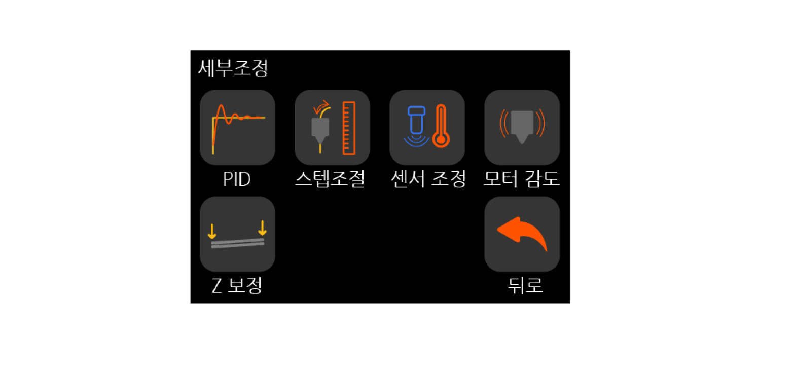
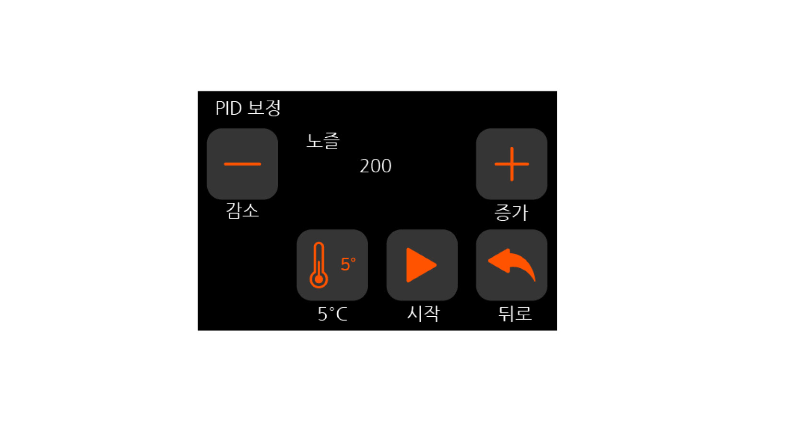
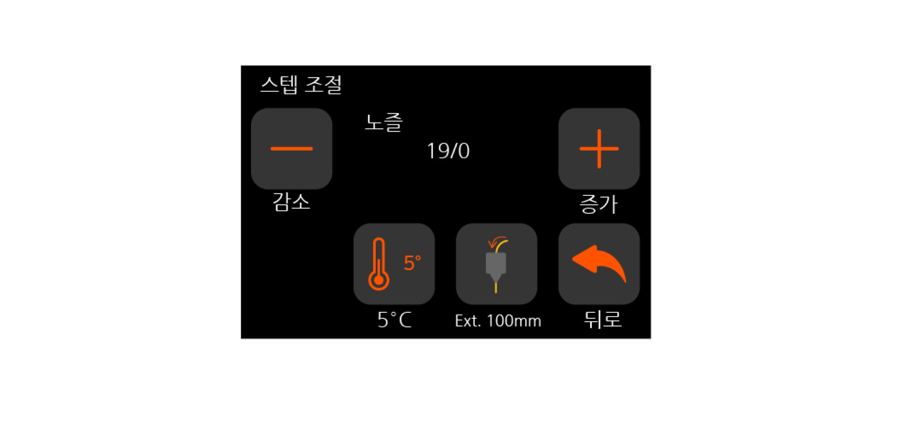
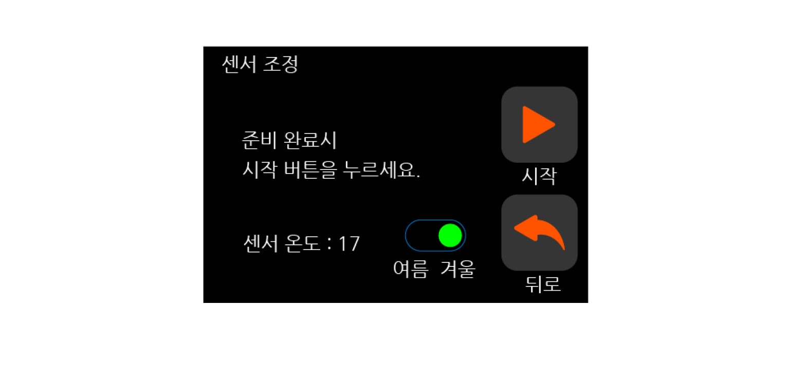
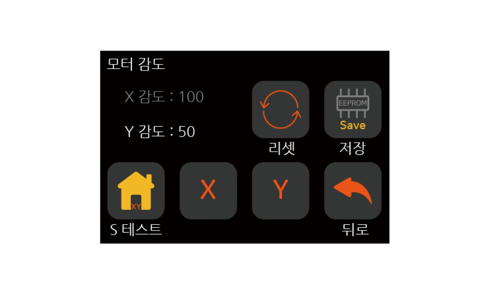

세부조정
{kind=link}
PID : 설정 온도를 안정적으로 유지하기 위해, PID 값을 조절하는 기능.
스텝 조절 : 익스트루더가 필라멘트를 밀어내는 mm 양을 조절하는 기능.
센서 조정 : 오토레벨링 센서가 온도에 따라 감지 거리를 보정하는 기능.
모터 감도 : 원점 이동시 모터가 부딪히면서 멈추는 과정에서 멈추는 감도를 조절하는 기능.
Z 보정 : 오토레벨링을 사용해도 부분적으로 레벨링이 안되는 부분을 보정해 주는 기능.
PID
{kind=link}
감소, 증가 : PID 보정을 하기 위한 노즐의 목표 온도를 조절하는 버튼.
5°C : 감소, 증가 버튼으로 변경되는 온도 단위를 표시, 누를 때마다 단위가 변경됨.
시작 : PID 보정 시작.
PID 제어란?
PID의 뜻은 비례-미분-적분를 뜻하며, 이 방식으로 제어하는 것을 PID 제어라고 합니다. PID제어가 어디에 쓰이는가? 질문에는 3D 프린터에서는 온도 제어에 사용된다고 답변드릴 수 있습니다. 왜 PID 제어가 필요한지는 다음 그래프를 통해 간단히 설명드리겠습니다.
{kind=link}
예열을 시작한 시간부터 온도를 200도(설정 온도)로 예열을 합니다. 현재 온도가 설정 온도보다 낮으면 전력 On, 높으면 Off 하는 방식으로는 온도가 200도에 도달을 하더라도 출렁임이 심합니다. 출렁임이 잔잔해지기까지도 오랜 시간이 걸립니다. 잔잔해지더라도 외부 환경에 의해 출렁임이 발생할 수 있습니다. 하지만 PID 제어를 하게 되면, 출렁임도 줄어들 뿐만 아니라, 온도가 고정되기까지 시간이 짧아지게 됩니다. 이런 이유로 온도(특히 노즐 온도)를 제어하는 과정에서 PID 제어가 정확할수록 더 최적화가 되었다라고 볼 수 있습니다. 필라멘트는 온도에 따라 출력 품질이 달라지기 때문에 이런 노즐 온도 제어는 PID로 많이 사용됩니다.
Step.1
{kind=link}
● 테스트할 온도를 설정하고 시작 버튼을 누르면, PID 보정을 진행할 것인지 팝업창이 뜹니다.
● 확인 버튼을 눌러 진행합니다.
Step.2
{kind=link}
● 시간이 지나면 PID 보정이 완료되었다고 나타납니다.
● 보정된 값을 EEPROM(저장 장치)에 저장을 합니다.
스텝 조절
{kind=link}
감소, 증가 : 노즐의 설정 온도를 조절하는 버튼.
5°C : 감소, 증가 버튼으로 변경되는 온도 단위를 표시, 누를 때마다 단위가 변경됨.
Ext. 100mm : 스텝 조절을 시작하는 버튼. (※시작전 필라멘트가 삽입되어 있어야 함)
PID 제어란?
계산상 Cremaker M V2의 익스트루더 모터 스텝수는 95[step/mm]입니다. 1mm의 필라멘트를 밀어내는데 95step이 필요합니다. 스텝[Step]은 스텝모터가 이동하는 단위입니다. 하지만 이는 이론상의 계산으로 도출된 값으로 필라멘트의 물성이나 익스트루더의 압착 상태, 노즐의 상태에 따라 달라질 수 있습니다. 이 스텝수를정확하게 하기 위한 과정입니다. 대부분 약간의 값 변경이 있지만, 값이 크게 달라지는 경우에는 스텝 조절로 해결할 수 있는 범위를 넘어서기에 다른 문제가 없는지 확인해 봐야 합니다.
Step.1
{kind=link}
● 필라멘트가 삽입되어 있지 않으면, 삽입합니다. (삽입 과정 참조)
● Ext. 100mm 버튼을 눌러 과정을 시작합니다. 만일 온도가 낮으면 온도가 낮다는 팝업창이 뜹니다. 온도를 올려주고 다시 시작합니다.
Step.2
{kind=link}
● 온도를 높이고 Ext. 100mm 버튼을 누르면, 필라멘트(재료)의 120mm 지점을 표시하라 합니다. 네임펜, 볼펜 등으로 120mm 지점을 표시합니다.
● 익스트루더 필라멘트 입구부터 120mm 지점을 표시 후 토출 버튼 누릅니다.
Step.3
{kind=link}
● 토출이 완료되면, 위와 같은 화면이 표시됩니다.
● 익스트루더에서 남은 길이를 측정합니다. 이상적으로는 20mm이지만 20mm 가 아니더라도 비정상은 아닙니다.
Step.4
{kind=link}
● 조그버튼을 돌려 남은 길이를 변경하여, 실측값과 동일하게 변경해 줍니다.
● 변경 후 값을 저장합니다.
센서 조정
{kind=link}
여름, 겨울 : 조정 작업을 시작하는 환경에 따라 값을 변경 시킬 수 있는 토글 스위치
시작 : 센서 조정을 시작하는 버튼
※해당 조정은 시간이 다소 걸리는 과정입니다.
센서 조정이란?
오토레벨링 센서가 감지하는 거리는 온도에 따라 미세하게 다릅니다. 이는 근접센서가 금속을 탐지하는 과정에서 온도의 영향을 받는 것과 같습니다. 이 온도에 따라서 감지 거리를 다르게 해주는 과정이 센서 조정 과정입니다. 이런 과정에서 조정되는 거리는 μm 단위이며, 1mm는 1000μm일 정도로 작은 값이지만, 조정하지 않은 상태보다는 조금 더 정확하게 측정할 것입니다. 물론 프린터 상태에 따라 조정없이도 레벨링이 잘 되는 경우도 있습니다.
Step.1
{kind=link}
● 센서 온도를 기준으로 겨울, 여름을 결정합니다. 주변 온도가 낮은 환경이 아니라면 대부분의 경우는 여름을 선택합니다.(※날짜는 겨울이라도요!)
● 계절 선택 후 시작 버튼을 누르면, 조정 작업이 시작됩니다.
● 시작 전 노즐 끝에 필라멘트가 묻어 있다면, 제거 후 시작합니다.
Step.2
{kind=link}
● 시간은 40~60분 정도 소요됩니다. 이후 완료가 되면, 완료되었다고 표시됩니다. 이때 ‘저장’ 버튼을 눌러 값을 저장합니다.
모터 감도
{kind=link}
X,Y 감도 : X,Y축 모터의 현재 감도 값을 표시
리셋 : 초기 저장된 모터 감도로 리셋
저장 : 변경된 값을 저장하는 버튼
S 테스트 : X,Y축 모터의 감도 테스트
X,Y : X(or Y)축 감도 값을 변경하기 위해 활성화해주는 기능
모터 감도란?
모터 감도는 3D 프린터가 원점을 잡으려 할 때 필요한 부분입니다. 크리메이커 메탈 V2와 같이 센서리스(스위치 없이 원점 잡는 방식)로 원점을 잡을 때, X, Y가 이동하면서 부딪히는 지점에서 힘이 많이 받게 되면, 그 지점을 원점으로 인식합니다. 따라서 힘을 어느정도 받냐에 따라 원점을 인식하는 위치가 달라집니다. 만일 너무 작은 힘을 받을 때 인식하거나 강한 힘을 받아도 인식하지 못한다면 문제가 생깁니다. 이 경우에 조절하는 값이 모터 감도값 입니다.
모터 감도 값은 높을 수록 민감하여, 각 원점에 도달하기전에 인식할 수 있으며, 낮을 수록 원점에 도달하여도 인식하지 못합니다.
Step.1
{kind=link}
● X 축 감도를 변경하고 싶으면, ‘X’ 버튼을 누르고 조그버튼을 돌립니다.
● Y 축 감도를 변경하고 싶으면, ‘Y’ 버튼을 누르고 조그버튼을 돌립니다.
Step.2
{kind=link}
● 값을 조절 후에 ‘S 테스트’ 버튼을 눌러 모터 감도가 적절한지 확인합니다.
● 정상적으로 원점 이동이 되면, 감도가 적절한 수준입니다.
● 조절이 되었으면, 저장 버튼을 누릅니다.
Z 보정
[1.4버전 이상]
{kind=link}
테스트 : 표시된 지점에서 테스트 출력을 진행하는 버튼.
다음 : 포인트 위치를 옮길 수 있는 버튼.
저장 : 변경된 값을 저장하는 버튼.
※ Z 보정 값은 조그버튼을 돌려서 변경합니다.
Z 보정을 하는 이유는 ‘준비/점검’의 레벨링 기능보다 더 정밀하고 각 구역별로 Offset을 증감하기 위함입니다. 레벨링 기능을 사용을 했더라도 일부 구역이 계속 들뜨거나 눌린다면, Z 보정을 통해 조절할 수 있습니다.
Step.1
{kind=link}
● 테스트(1) 버튼을 눌러줍니다. home과 레벨링을 진행합니다.
● 이후 첫 번째 지점에서 테스트 라인을 출력합니다.
● 라인의 상태를 확인합니다.
Step.2
{kind=link}
● 조그 버튼으로 보정 값을 라인 상태에 맞춰 적절하게 변경해줍니다.
● 라인이 너무 눌려 있으면 + 값, 너무 떠 있으면 - 값을 설정해주고 저장(2) 버튼을 눌러줍니다.
● 테스트(1) 버튼을 눌러 다시 라인을 확인합니다.
● 적절한 라인이 그려지면, 다음 포인트로 이동하고 반복합니다.
● 완료 후 뒤로 버튼을 눌러 값을 저장합니다.
[1.3버전 이하]
{kind=link}
이전, 다음 : 포인트 위치를 옮길 수 있는 버튼.
보정된 값 : 해당 포인트의 보정된 값을 표시.
저장 : 변경된 값을 저장하는 버튼.
※ Z 보정 값은 조그버튼을 돌려서 변경합니다.
Z 보정을 하는 이유는 ‘준비/점검’의 레벨링 기능보다 더 정밀하고 각 구역별로 Offset을 증감하기 위함입니다. 레벨링 기능을 사용을 했더라도 일부 구역이 계속 들뜨거나 눌린다면, Z 보정을 통해 조절할 수 있습니다.
※아래의 단계는 베드의 오른편이 뜨는 상태(라인이 얇게 그려지거나 뭉치는 상태)를 가정하였습니다.
Step.1
{kind=link}
● 다음, 이전 버튼을 이용하여, 조절하고자 하는 구역으로 이동을 합니다.
● 이후 조그 버튼을 돌려, 적절한 값을 맞춰줍니다.
● 조절이 되었으면, 저장 버튼을 누릅니다.
Step.2
{kind=link}
● 문제가 있는 구역을 전부 조절해 줍니다.
● 각 구역별로 조절 후 저장 버튼을 누르면 자동 저장됩니다.
● 완료되었으면, 뒤로 버튼을 눌러줍니다.